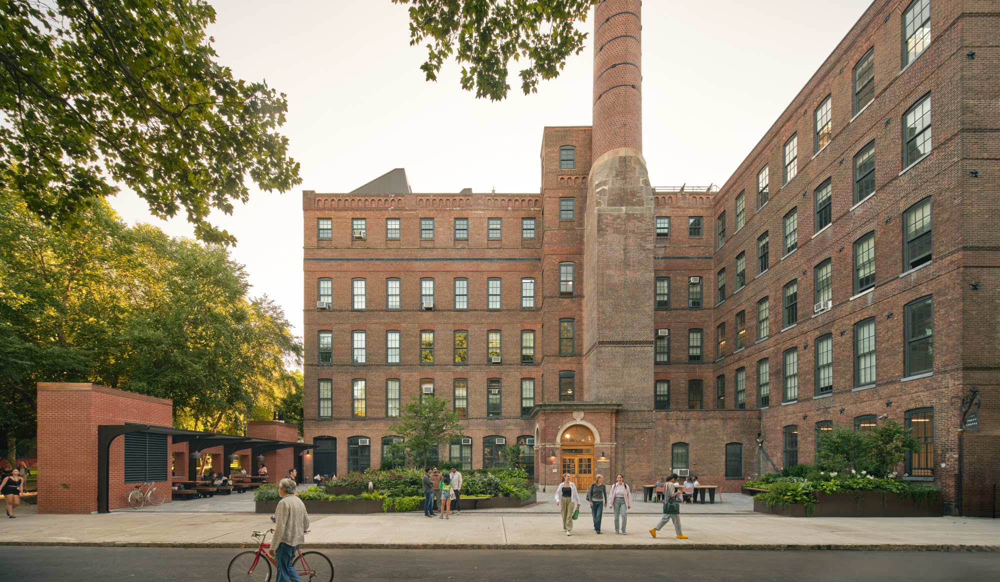

Week6_HTML_Inclasslab/index.html → week6_html_inclasslab/index.html
Pratt Institute
Pratt Institute
About
Pratt is an institute, an experience, and an idea. What started as a radical experiment to expand access to creative careers is now a community of 5,137 grad and undergrad students working across 48 programs with 1,200 dedicated faculty. 135 years in the making, this is Pratt.

Links to Pratt Resources:
Blending theory and practice, our curriculum weaves creative studio work with critical reflection on social impact. It’s this dynamic approach that challenges students to reach their full potential here—to think and to make, to lead and to collaborate, and evolve continually above all. In the process, you’ll engage with issues of justice, sustainability, resilience, and global citizenship, developing fluency across disciplines and the skills to solve problems creatively, at Pratt and beyond.
School Website
Visit Pratt
School Image
Image of Pratt Institute Campus
School Gallery
Another Image of Pratt Institute Campus
School Contact
Email Me!
Email Pratt!
Academics:
- Undergraduate Programs
- Graduate Programs
- School of Architecture
- School of Art
- School of Design
- School of Information
- School of School of Liberal Arts & Sciences
- Admissions & Aid
- Life at Pratt
------------------------------------------------------
| Keanu |
Reeves |
61 |
| Jill |
Smith |
50 |
| Eve |
Jackson |
94 |
------------------------------------------------------
------------------------------------------------------
| Merged |
| Third Cell |
Fourth Cell |
| First Cell |
Merged |
| Third Cell |
------------------------------------------------------
News
Beyond Pratt: Where Students Go After Graduation
/25:FA-INFO-654-08 Information Technologies/Week 6 - Web Design, HTML (Part 1) - Required Reading/In-Class Activity/Pratt_Ty-Cole_web-5.jpg){kind=link}